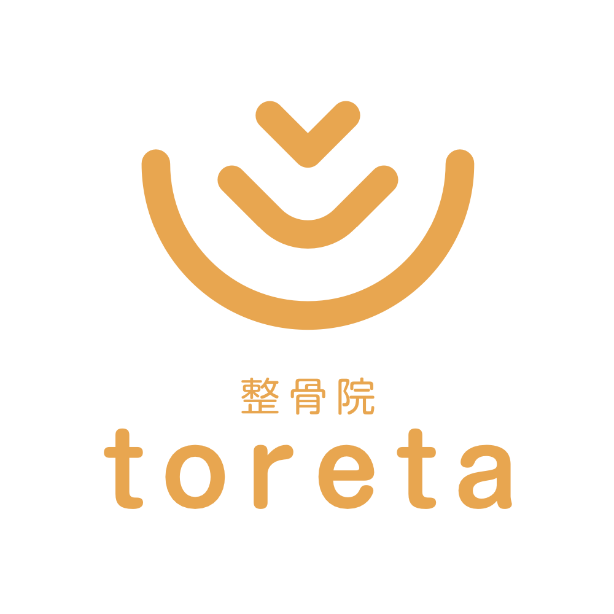

こんなお悩みはありませんか
その痛み、
放置していませんか？
✓
長年の腰痛・肩こりがなかなか治らない
✓
他院に通ったが、すぐ再発してしまう
✓
痛みの原因をきちんと説明してもらえない
✓
手術や薬以外の方法で改善したい
✓
整体が初めてで不安がある

表面的なマッサージではなく、構造医学に基づいた根本改善に年間挑み続けてきました。
「もう治らない」と諦めていた方が、今では笑顔で日常を取り戻しています。
どこへ行っても変わらなかったその痛み、諦める前に一度ご相談ください。
※強引な営業は一切ありません。相談だけでもOKです。
またはメールで → お問い合わせフォーム
「痛みがとれた」という言葉が、私たちにとって最高の褒め言葉です。慢性的な痛みも、もう治らないと思っている痛みにも、必ず理由があります。構造医学に基づいた施術で、痛みの根本から向き合います。はじめての方でも丁寧にご説明しますので、どうぞ安心してお越しください。
初めて整体院に来るのは不安なもの。toretaでは、いきなり施術ではなく、まずあなたのお話をしっかり聞くことから始めます。
お電話またはメールで。当日予約も可能です。気になることは何でもお気軽にどうぞ。
どこが・いつから・どんな時に痛いか、丁寧にお聞きします。焦らずゆっくりお話ください。
痛みの原因をわかりやすくご説明します。「なぜ痛いのか」を理解することが改善への第一歩です。
痛くない、やさしい施術です。終わった後のセルフケアもお伝えします。
「ボキボキ」「グイグイ」はありません。身体への負担を最小限に抑えながら、じっくりと改善へ導きます。
表面的な症状だけでなく、なぜその痛みが出ているのかを構造医学の視点から徹底的に分析します。
施術者は経験20年以上のベテランが2名。毎回同じ先生が担当するので、身体の変化を継続的に把握しながら施術できます。
症状や期間は人それぞれです。まずは一度、ご相談ください。
「最初はギックリ腰。歩くのも大変でしたが、施術のあとはビックリするくらいスタスタと歩けるようになりどハマり！今でもその時の症状にあった施術や自宅でのメンテナンス方法などを教えてもらいながら、予防を兼ねて通っています😊」
ぎっくり腰は一度起こすと再発しやすくなります。toretaでは急性期の施術だけでなく、再発しないための身体づくりとセルフケアをお伝えします。「治った」で終わらせない、予防まで含めたサポートが私たちの強みです。
「最初はヘルニアで、手術やけん引が怖くて通い始めたのですが、丁寧に施術していただいたおかげで回復できました。妊娠中も無理のないように対応してくださり、産後も数週間で施術を受けられて体がとても楽になりました。家族三世代（10代・40代・70代）でお世話になっています。」
時間で区切らず症状に合わせてしっかり対応。使う器具や施術内容も一人ひとり違います。妊娠中・産後・10代から70代まで、家族みんなで通える整体院です。着替えも完備、予約も臨機応変に対応しています。
「頭痛は内科的なものかと思い、薬を内服していましたが、施術を受けたら一度で体が軽くなり頭痛も良くなってビックリ。気候の良い時は往復1.5時間の道のりを徒歩で通っていますが苦になりません。通う価値あり、です。」
ローラー器具を使った特徴的な施術で、背骨・骨盤のバランスを整えます。急なぎっくり腰や首のむちうちなど緊急時にも対応。「その時の身体の状態に合った施術」を毎回丁寧に行います。
「産後は歩くのもしっかり歩けないくらいガタガタで…通って4ヶ月経ちますが今は走れるくらい身体が軽くなりました⭐︎本当にtoreta整体院に行って良かったです。室内は狭いですがベビーカーで行く事もお伝えすると大丈夫でした。」
出産で開いた骨盤は、放置すると歪んだまま固まってしまうことがあります。坐骨神経痛を併発している場合も多く、産後の身体に合わせたやさしい施術で骨盤を正しい位置に整えます。ベビーカーでのご来院もご相談ください。
職業柄、肩や腰の痛みに悩まされて通い始めました。最初はどんよりした気持ちで扉を開いていたのですが、毎回帰る頃には背中に翼が生えたように身も心も軽くなって、どこまでも走れそうな状態にしていただけました！続けて通うことで、今では仕事で身体を酷使しても最悪な状態は回避し、できる限り良い状態をキープできてるなぁと実感しています。
病院に行っても、どんな痛み止めを飲んでもダメなくらい強い偏頭痛持ちでしたが、こちらに通い始めて2〜3回で本当に良くなりました。今は低気圧の時に少し痛くなるくらいでほとんど気になりません。QOL上がりました。感謝です。
夫婦で10年以上お世話になっています。産後の骨盤調整やぎっくり腰、めまいなど様々な不調をみていただきました。終わったあとは体が軽くなり、安心して通える整骨院です。子連れでもみてくださるので、子供が小さいときはとても助かりました。これからも長くお願いしたいと思っています。
「整体は初めて」「本当に治るか不安」
そんな方のご相談も大歓迎です。
電話でのご質問だけでも構いません。
セルフケア動画・施術のご案内・スタッフの日常など、Instagramでお届けしています。
17年間、地域の皆さまの痛みと向き合ってきました。
諦める前に、一度ご相談ください。
※強引な営業は一切ありません。相談だけでもOKです。